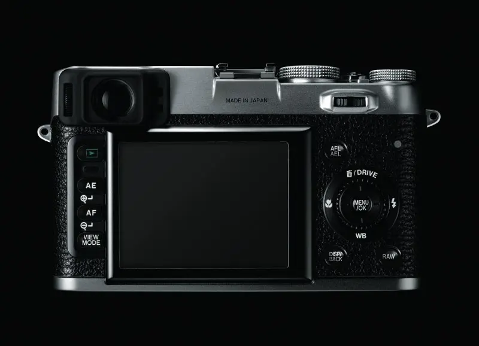
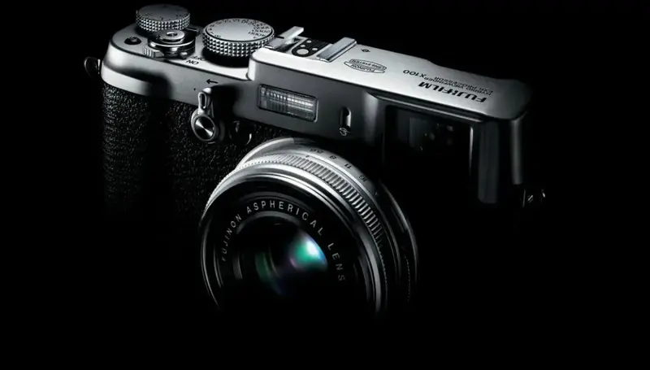
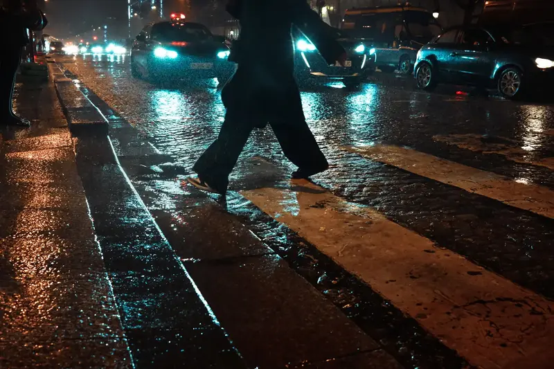
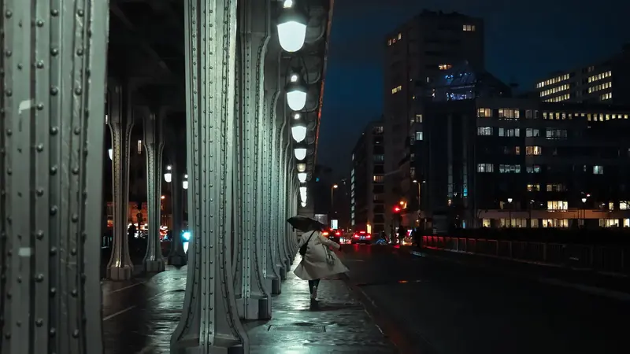
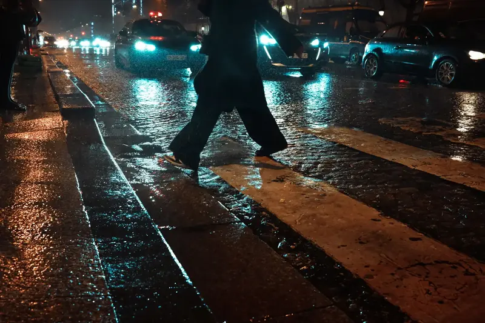
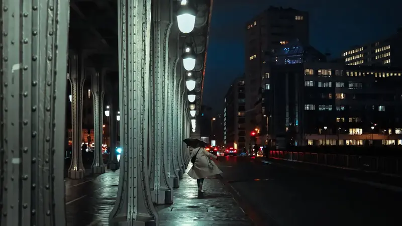

Bürgin

Tsang
Mroz
Charters
Valentin
Cheng
Hild
Mroz
From inspiration
to timeless capture
Explore how the FinePix X100 turns every moment into a story worth telling.
Design iconique
Un boîtier rétro-moderne, compact, conçu pour tenir dans la main comme un carnet de voyage.
Optique lumineuse
Objectif Fujinon 23mm f/2, pour des images nettes, lumineuses, sans compromis.
Expérience intuitive
Mélange de tactile et de molettes physiques, viseur hybride, simulation de films.
Aujourd'hui : X100VI
Sortie 2024
Le Fujifilm X100VI est la sixième génération iconique X100.
-
Capteur X-Trans CMOS 5 HR de 40,2 MP
Équipé du même capteur que le X-T5, garantissant une qualité d'image exceptionnelle.
-
Stabilisation IBIS (5 axes)
Une première dans la série X100, permettant la prise de vue à main levée même en conditions de faible luminosité.
-
fixe 23mm f/2 revisité
Un angle de champ idéal pour la photographie de rue et les portraits environnementaux, avec un rendu bokeh soigné.
-
Vidéo 6.2K
Offre désormais des capacités vidéo avancées pour un enregistrement haute définition professionnel.
-
Écran arrière inclinable et tactile
Allie praticité moderne et design vintage sans compromis.
-
Simulations de film Fujifilm
Profitez des célèbres profils Classic Chrome, Provia, Acros ou Nostalgic Neg pour des images parfaitement optimisées dès la prise de vue.
 


